| 1 |
Autodromo Enzo e Dino Ferrari |
versenypálya |
4,909 km (3,050 mi) |
Imola, Olaszország |
olasz nagydíj,
San Marinó-i nagydíj,
emilia-romagnai nagydíj |
1980–2006, 2020– |
29 |
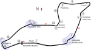 |
| 2 |
Autódromo Hermanos Rodríguez |
versenypálya |
4,304 km (2,674 mi) |
Mexikóváros, Mexikó |
mexikói nagydíj
mexikóvárosi nagydíj |
1963–1970, 1986–1992, 2015–2019, 2021– |
21 |
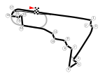 |
| 3 |
Autódromo José Carlos Pace |
versenypálya |
4,309 km (2,677 mi) |
São Paulo, Brazília |
brazil nagydíj,
São Pauló-i nagydíj |
1973–1977, 1979–1980, 1990–2019, 2021– |
38 |
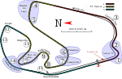 |
| 4 |
Autodromo Nazionale di Monza |
versenypálya |
5,793 km (3,600 mi) |
Monza, Olaszország |
olasz nagydíj |
1950–1979, 1981– |
71 |
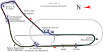 |
| 5 |
Baku City Circuit |
városi |
6,003 km (3,730 mi) |
Baku, Azerbajdzsán |
európai nagydíj,
azeri nagydíj |
2016–2019, 2021– |
5 |
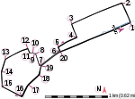 |
| 6 |
Bahrain International Circuit |
versenypálya |
5,412 km (3,363 mi) |
Szahír, Bahrein |
bahreini nagydíj,
szahír nagydíj |
2004–2010, 2012– |
18 |
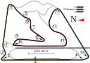 |
| 7 |
Circuit de Barcelona-Catalunya |
versenypálya |
4,675 km (2,905 mi) |
Montmeló, Spanyolország |
spanyol nagydíj |
1991– |
31 |
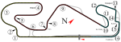 |
| 8 |
Circuit de Monaco |
városi |
3,337 km (2,074 mi) |
Monte-Carlo, Monaco |
monacói nagydíj |
1950, 1955–2019, 2021– |
67 |
 |
| 9 |
Circuit de Spa-Francorchamps |
versenypálya |
7,004 km (4,352 mi) |
Spa, Belgium |
belga nagydíj |
1950–1956, 1958, 1960–1968, 1970, 1983, 1985–2002, 2004–2005, 2007– |
54 |
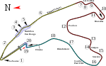 |
| 10 |
Circuit Gilles-Villeneuve |
városi |
4,361 km (2,710 mi) |
Montréal, Kanada |
kanadai nagydíj |
1978–1986, 1988–2008, 2010–2019, 2022– |
40 |
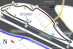 |
| 11 |
Circuit of the Americas |
versenypálya |
5,513 km (3,426 mi) |
Austin, Amerikai Egyesült Államok |
amerikai nagydíj |
2012–2019, 2021– |
9 |
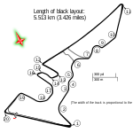 |
| 12 |
Circuit Paul Ricard |
versenypálya |
5,842 km (3,630 mi) |
Le Castellet, Franciaország |
francia nagydíj |
1971, 1973, 1975–1976, 1978, 1980, 1982–1983, 1985–1990, 2018–2019, 2021– |
17 |
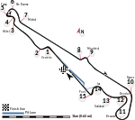 |
| 13 |
Circuit Zandvoort |
versenypálya |
4,259 km (2,646 mi) |
Zandvoort, Hollandia |
holland nagydíj |
1952–1953, 1955, 1958–1971, 1973–1985, 2021– |
31 |
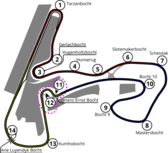 |
| 14 |
Hungaroring |
versenypálya |
4,381 km (2,722 mi) |
Mogyoród, Magyarország |
magyar nagydíj |
1986– |
36 |
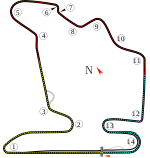 |
| 15 |
Jeddah Street Circuit |
városi |
6,174 km (3,836 mi) |
Dzsidda, Szaúd-Arábia |
szaúd-arábiai nagydíj |
2021– |
2 |
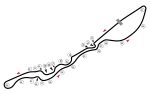 |
| 16 |
Melbourne Grand Prix Circuit |
városi |
5,303 km (3,295 mi) |
Melbourne, Ausztrália |
ausztrál nagydíj |
1996–2019, 2022– |
24 |
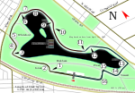 |
| 17 |
Miami International Autodrome |
városi |
5,410 km (3,362 mi) |
Miami Gardens(wd), Amerikai Egyesült Államok |
miami nagydíj |
2022– |
0 |
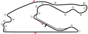 |
| 18 |
Red Bull Ring |
versenypálya |
4,318 km (2,683 mi) |
Spielberg, Ausztria |
osztrák nagydíj,
stájer nagydíj |
1970–1987, 1997–2003, 2014– |
35 |
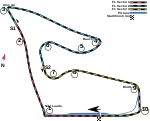 |
| 19 |
Silverstone Circuit |
versenypálya |
5,891 km (3,660 mi) |
Silverstone, Egyesült Királyság |
brit nagydíj,
70. évforduló nagydíj |
1950–1954, 1956, 1958, 1960, 1963, 1965, 1967, 1969, 1971, 1973, 1975, 1977, 1979, 1981, 1983, 1985, 1987– |
56 |
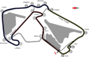 |
| 20 |
Singapore Street Circuit |
városi |
5,063 km (3,146 mi) |
Szingapúr |
szingapúri nagydíj |
2008–2019, 2022– |
12 |
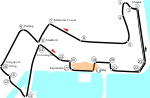 |
| 21 |
Suzuka International Racing Course |
versenypálya |
5,807 km (3,608 mi) |
Szuzuka, Japán |
japán nagydíj |
1987–2006, 2009–2019, 2022– |
31 |
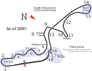 |
| 22 |
Yas Marina Circuit |
versenypálya |
5,281 km (3,281 mi) |
Abu-Dzabi, Egyesült Arab Emírségek |
abu-dzabi nagydíj |
2009– |
13 |
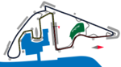 |